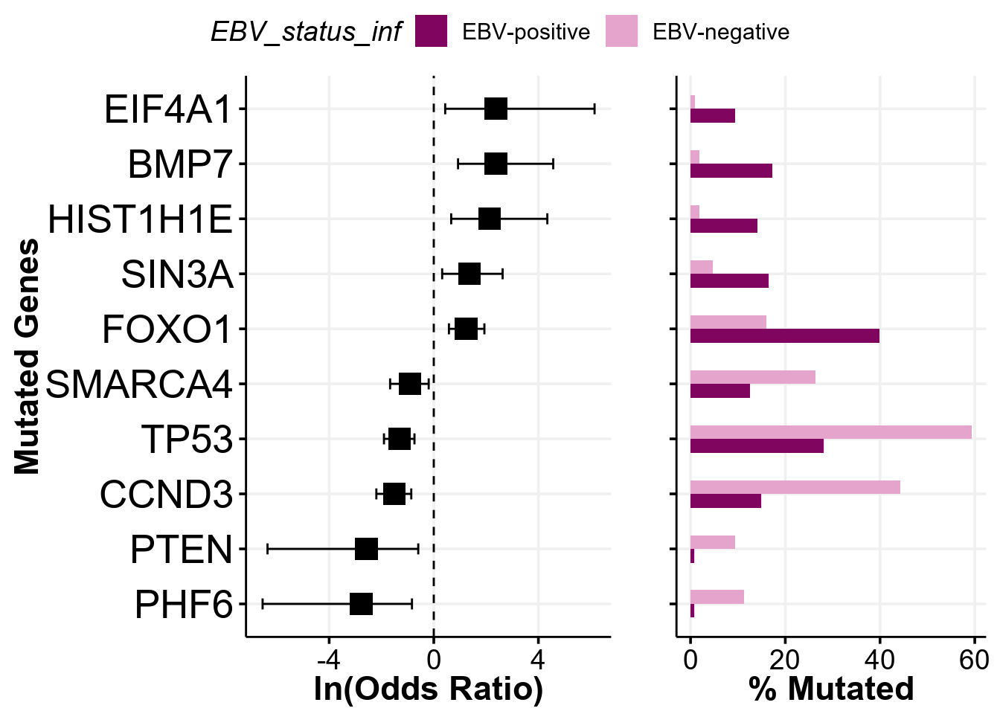
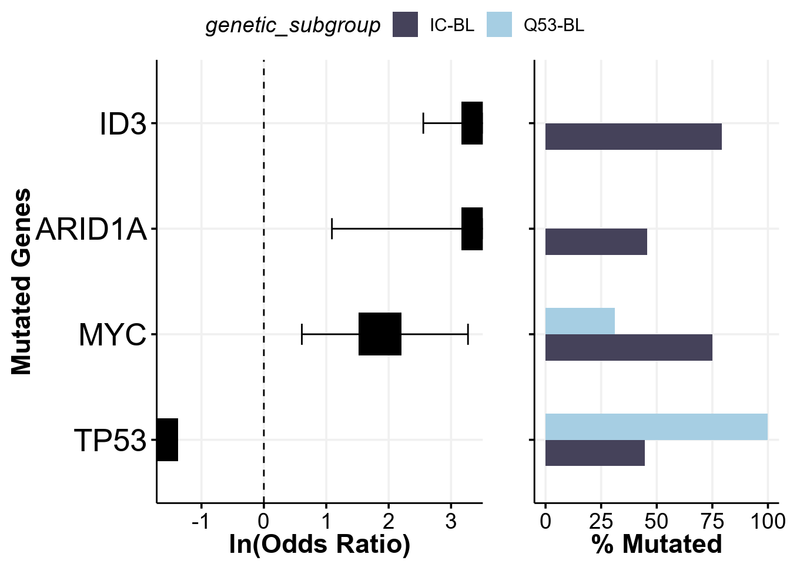
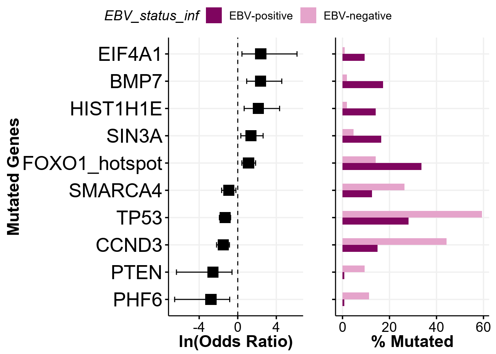
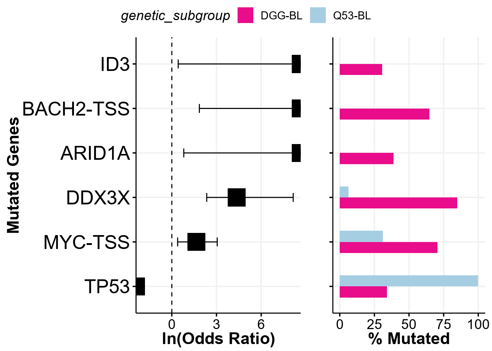

# Load packages
library(GAMBLR.data)
library(GAMBLR.utils)
library(GAMBLR.viz)
library(tibble)
library(dplyr)Tutorial: The prettiest forestplot
One of the integral parts of this package is the analysis and display of the differences in the frequency of mutations for two different groups in a given cohort. Because it is easy to use, conducts flexible comparisons, and generates easy-to-follow display items, it is called prettyForestPlot and it belongs to the pretty family of GAMBLR.viz functions. There is no specific formatting or data preparation needed for the analysis and visualization, and the only required inputs are the mutation data (can be maf format or binary feature matrix), metadata (containing sample identifiers in sample_id column and annotation of the group that will be used in comparison), and a character of the column name in metadata where the sample annotations are specified. This tutorial will demonstate the example of the inputs and showcase the main features of this function.
Prepare setup
We will first import the necessary packages:
Next, we will get some data to display. The metadata is expected to be a data frame with one required column: sample_id and another column that will contain sample annotations according to the comparison group. In this example, we will use as example the data set and variant calls from the study that identified genetic subgroup of Burkitt lymphoma (BL).
metadata <- get_gambl_metadata() %>%
filter(cohort == "BL_Thomas")Next, we will obtain the coding mutations that will be used in the plotting. The data is a data frame in a standartized maf format.
maf <- get_ssm_by_samples(
these_samples_metadata = metadata,
tool_name = "publication",
projection = "hg38"
)
# How does it look like?
dim(maf)[1] 47043 45head(maf) %>%
select(
Tumor_Sample_Barcode,
Hugo_Symbol,
Variant_Classification
) Tumor_Sample_Barcode Hugo_Symbol Variant_Classification
1: Akata CPTP Missense_Mutation
2: Akata FNDC10 Missense_Mutation
3: Akata MORN1 Missense_Mutation
4: Akata MEGF6 Missense_Mutation
5: Akata NPHP4 Silent
6: Akata GPR157 Missense_MutationFor the purpose of this tutorial, we will focus on a small subset of genes known to be significantly mutated in BL.
genes <- lymphoma_genes_bl_v_latest$Gene
head(genes)[1] "ALPK2" "ARHGEF1" "ARID1A" "B2M" "BACH2" "BCL10" Now we have our metadata and mutations we want to explore, so we are ready to start visualizing the data.
The default forest plot
The forest plot is ready to be called with the default parameters after just providing the metadata and data frame with mutations in standard maf format. Here is an example of the output with all default parameters:
comparison_column <- "EBV_status_inf" # character of column name for comparison
fp <- prettyForestPlot(
metadata = metadata,
maf = maf,
genes = genes,
comparison_column = comparison_column
)The output of the function is a list containing the following objects: - fisher: a data frame with detailed statistics of the Fisher’s test for each gene - mutmat: a binary matrix used for the Fisher’s test - forest: a ggplot2 object with the forest plot of the ORs from the Fisher’s test for each gene - bar: a ggplot2 object wiht mutation frequencies for each Gene - arranged: a display item where both the forest and bar plots are nicely arranged side-by-side
names(fp)[1] "fisher" "forest" "bar" "arranged" "mutmat" Report only significant differences
By default, all of the genes of interest are reported in the output. After the Fisher’s test is performed, the prettyForestPlot also calculates FDR and we can use it to only report significant differences by providing a significance cutoff with the parameter max_q:
max_q <- 0.1 # only those qith Q value <= 0.1 will be reported
fp <- prettyForestPlot(
metadata = metadata,
maf = maf,
genes = genes,
comparison_column = comparison_column,
max_q = max_q
)We now can take a look at what genes are passing the significance cutoff:
fp$arranged
Comparing categories with more than two groups
As the prettyForestPlot construcst the 2x2 contingency tables to run Fisher’s test to find significant differences, it can only operate on comparing 2 groups between themselves - but what if you have more than that and want to see the difference between some of them? To handle this scenario, we can take advantage of the comparison_values parameter, which will be used to subset the metadata to only requested groups and only perform testing and plotting on this subset. Let’s see it in action:
comparison_column <- "genetic_subgroup" # change the comparison column
comparison_values <- c("IC-BL", "Q53-BL")
fp <- prettyForestPlot(
metadata = metadata,
maf = maf,
genes = genes,
comparison_column = comparison_column,
comparison_values = comparison_values,
max_q = max_q
)
fp$arranged
This plot is exactly reproducing the Supplemmental Figure 12D from the Thomas et al study!
Separating genes with hotspots
We can additionally separate hotspots from the other mutations and compare those separately. First, we need to annotate the maf data, for which we will use the annotate_hotspots from GAMBLR family. This function will add a new column to the maf named hot_spot indicating whether or not the specific mutation is in the hotspot region.
# Annotate hotspots
maf <- annotate_hotspots(maf)
# What are the hotspots?
maf %>%
filter(hot_spot) %>%
select(Hugo_Symbol, hot_spot) %>%
table()< table of extent 0 x 0 >
Note
The GAMBLR.data version of the annotate_hotspots only handles very specific genes and does not have functionality to annotate all hotspots.
Oh no! Looks like there is no hotspots in this maf data. This does not make sense, so what happened? Aha, the hotspot annotation in GAMBLR.data works only on the data in grch37 projection. But our maf is in hg38, so what should we do? One way is to lift the maf data to another projection using the UCSC’s liftOver, and GAMBLR family has exactly the function that serves this purpose:
maf_grch37 <- liftover(
maf,
mode = "maf",
target_build = "grch37"
) %>%
mutate(Chromosome = gsub("chr", "", Chromosome)) %>%
select(-hot_spot) # since it is empty we can just drop itCan we annotate the hotspots now?
maf_grch37 <- annotate_hotspots(maf_grch37)
# What are the hotspots?
maf_grch37 %>%
filter(hot_spot) %>%
select(Hugo_Symbol, hot_spot) %>%
table() hot_spot
Hugo_Symbol TRUE
CREBBP 1
EZH2 1
FOXO1 60
MYD88 2
STAT6 4Indeed, the hotspots are properly annotated once we have maf in correct projection. Now, we can simply toggle the separate_hotspots parameter to perform separate comparisons within hotspots:
comparison_column <- "EBV_status_inf"
fp <- prettyForestPlot(
metadata = metadata,
maf = maf_grch37,
genes = genes,
comparison_column = comparison_column,
max_q = max_q,
separate_hotspots = TRUE
)
fp$arranged
Using binary matrix as input
Sometimes it might be useful to have different input format instead of maf - for example, binary matrix of features. Can we use the prettyForestPlot in this case? Yes, sure we can!
First, let’s construct the binary matrix. We will supplement our maf with the non-coding mutations to look at the aSHM regions in addition to coding mutations, and this will already give us the data in correct projection:
maf <- get_ssm_by_samples(
these_samples_metadata = metadata
)
maf$Variant_Classification %>% table.
3'Flank 3'UTR 5'Flank
1457 513 2957
5'UTR Frame_Shift_Del Frame_Shift_Ins
1102 124 97
IGR In_Frame_Del In_Frame_Ins
457 40 14
Intron Missense_Mutation Nonsense_Mutation
44397 1859 286
Nonstop_Mutation RNA Silent
6 74 481
Splice_Region Splice_Site Translation_Start_Site
148 114 22 Now we convert this maf into binary matrix:
# Generate binary matrix
coding_matrix <- get_coding_ssm_status(
these_samples_metadata = metadata,
maf_data = maf,
gene_symbols = genes,
include_hotspots = TRUE,
review_hotspots = TRUE
)Next, supplement this with the matrix of non-coding mutation across aSHM regions
# Use aSHM regions from GAMBLR.data
regions_bed <- somatic_hypermutation_locations_GRCh37_v0.2
# Add convenient name column
regions_bed <- regions_bed %>%
mutate(
name = paste(gene, region, sep = "-")
)
# Generate matrix of mutations per each site
ashm_matrix <- get_ashm_count_matrix(
regions_bed = regions_bed,
maf_data = maf,
these_samples_metadata = metadata
)
# Binarize matrix using arbitrary 3 muts/region cutoff
ashm_matrix[ashm_matrix <= 3] = 0
ashm_matrix[ashm_matrix > 3] = 1
ashm_matrix <- ashm_matrix %>%
rownames_to_column("sample_id")We can now combine both coding and non-coding features into single matrix:
feature_matrix <- left_join(
coding_matrix,
ashm_matrix
)
# Drop any fearures absent across at least 10 samples to clean any noise
feature_matrix <- feature_matrix %>%
select_if(is.numeric) %>%
select(where(~ sum(. > 0, na.rm = TRUE) >= 10)) %>%
bind_cols(
feature_matrix %>% select(sample_id),
.
)Now we can provide the binary matrix to the prettyForestPlot and regenerate the Supplemmental Figure 12C from the Thomas et al study!
comparison_column <- "genetic_subgroup"
comparison_values <- c("DGG-BL", "Q53-BL")
fp <- prettyForestPlot(
metadata = metadata,
mutmat = feature_matrix,
genes = genes,
comparison_column = comparison_column,
comparison_values = comparison_values,
max_q = max_q
)
fp$arranged